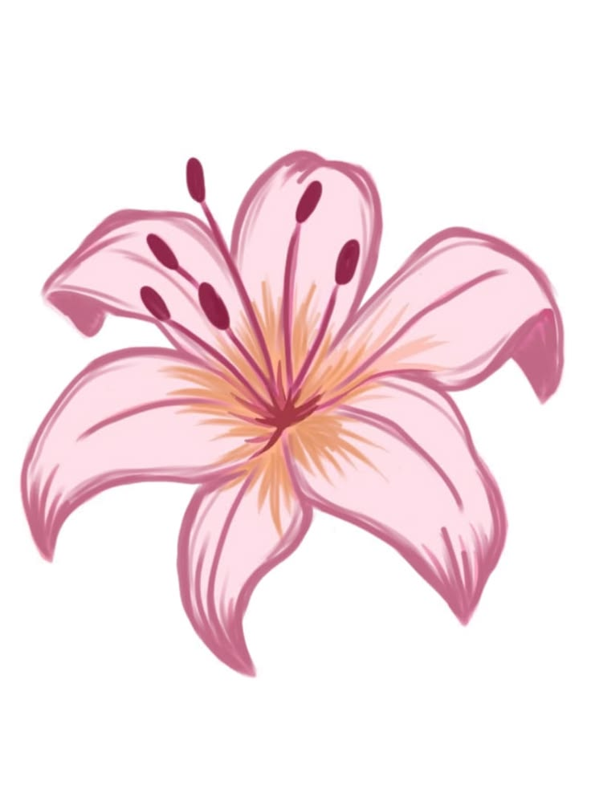
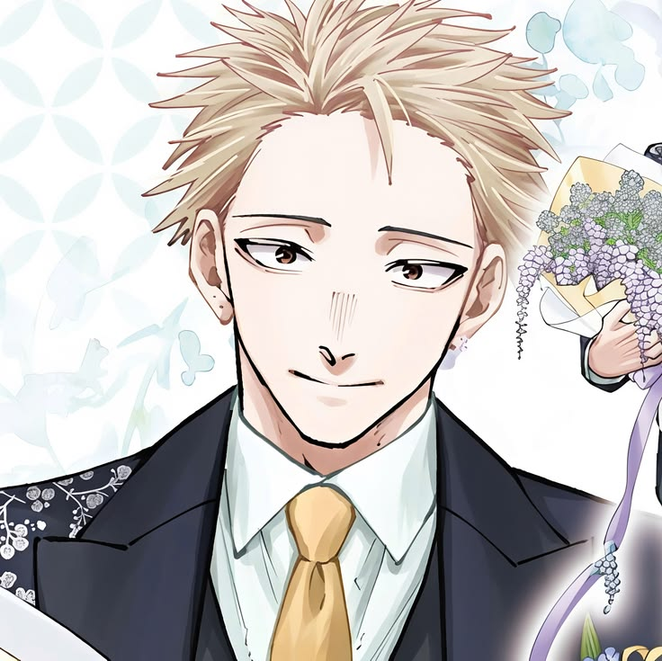
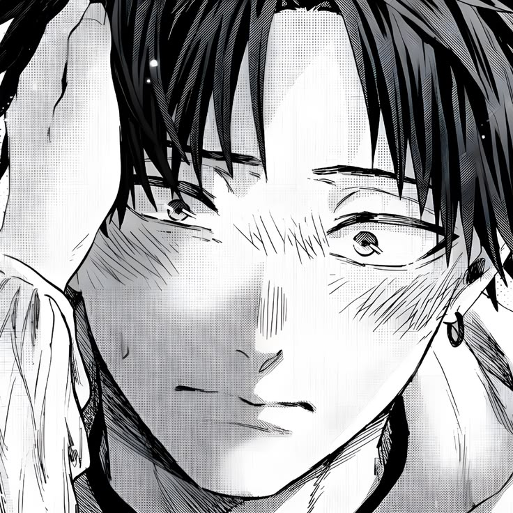
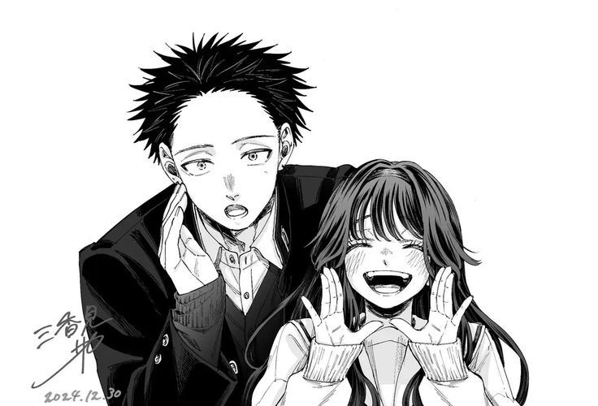
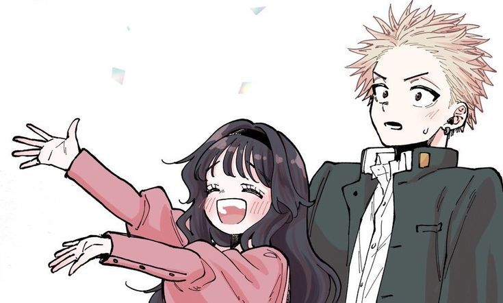

Mi niña preciosa
Aquí dejo todo mi esfuerzo y dedicación para poder expresarte todo lo que siento
💗 Un consejo antes de empezar 💗
Esta página de Inicio está pensada para verse al final de todo, así que te recomiendo dejarla para el último momento. Recorre primero las demás secciones en este orden:
Y cuando termines, vuelve aquí para leer todo lo que quiero decirte. 💌
Juntos hicimos un mundo hermoso donde ambos conectamos y aprendimos cada día, es por eso que mereces este regalo, cariño, para recordarte lo especial que eres para mí y para recordarte que cada día que pasa te amo más y más.
La razón de conocerte
Quiero agradecerte por darme esta forma tan bonita de unirme a tu vida, ya que si no fuera por este hermoso anime jamás hubiera conocido al amor de mi vida. Decían que el amor así solo era una fantasía, pero gracias a ti me di cuenta de que el amor verdadero sí existe y que es más hermoso de lo que jamás hubiera imaginado. Y aunque no sea perfecto, siempre encontraremos la forma de seguir adelante, porque Fer, de verdad quiero un futuro a tu lado, quiero que sigamos creciendo por muchos años más y que esta relación solo siga creciendo y fortaleciéndose, porque de verdad te amo con todo mi corazón y no quiero perderte nunca. Rintaro y Waguri para mí no solo son personajes, para mí son un significado, una canción, un recuerdo, un sentimiento que nos une todos los días y nos recuerda el porqué nos enamoramos en primer lugar.
Regalitos BellosTan hermosa como los lirios

Sé que aún no puedo darte flores en persona, es por eso que te las dedico de esta manera, porque sé que amas los lirios, así que siempre sabrás que te amo y que eres la persona más importante en mi vida, porque eres mi lirio hermoso, mi lirio rosado, mi lirio precioso. Si algún día te preguntaras cuál es tu flor favorita y respondieras otra que no sea lirios, significa que no soy esa persona; mientras viva siempre tendrás a alguien que te regale lirios y te recuerde qué tan hermosa eres justo como ellos.

Me amas a pesar de todo
Me amas a pesar de cualquier cosa que pueda pasar en mi vida, me amas a pesar de mis defectos, me amas a pesar de mis errores, me amas a pesar de mis inseguridades, me amas a pesar de mis miedos, me amas a pesar de mis problemas, y eso es algo que no todos pueden decir que tienen en su vida. Sé que suelo ser alguien con miedo, que a veces no sé bien cómo pensar y que cuando no sé controlar algo me da ansiedad y empiezo a sobrepensar cada palabra, cada detalle y cada acción. Sin embargo, allí estás siempre, dándome la mano, dándome tus besos; contigo no me da miedo mostrar quién soy, esa parte delicada y frágil que todos tenemos; contigo puedo ser yo mismo y eso es algo que no todos pueden decir que tienen en su vida.

Un futuro contigo

Cada día que paso a tu lado me convenzo más de que quiero seguir construyendo este camino contigo. Sueño con todos los momentos que aún nos faltan: las risas, los viajes, las tardes tranquilas y hasta los días difíciles, porque sé que de tu mano todo se vuelve más ligero. No quiero un futuro perfecto, quiero un futuro real, uno donde sigamos eligiéndonos cada mañana y donde nuestro amor crezca tanto como nosotros. Gracias por ser mi presente y por dejarme soñar con un mañana en el que siempre estés tú.
Siempre podrás contar conmigo
Sé que la vida ha sido muy difícil para los dos, encontrando momentos buenos y malos en todo nuestro camino. Sin embargo, quiero que sepas que siempre podrás contar conmigo, en los momentos buenos y en los malos, porque no importa lo que pase, siempre estaré a tu lado. Nuestro amor será más fuerte que cualquier otra cosa, más grande que cualquier obstáculo y más duradero que cualquier dificultad. Porque te amo con todo mi corazón y siempre lo haré. Mi linda Fer, podremos juntos con todo, podremos seguir adelante, podremos ser felices juntos. ¡¡NADA NI NADIE PODRÁ DETENER NUESTRO AMOR!!

Te dedico estas palabras
Porque aunque no lo creas, no solo amo los momentos felices, te amo incluso en los momentos donde parece que no encontramos solución, porque eso me prometí y es de esa manera que te amo más que nada en todo el mundo. No importa cuánto llores o las veces que caigas, amo cada una de tus lágrimas, y las seguiré amando por siempre.